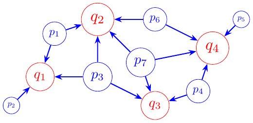
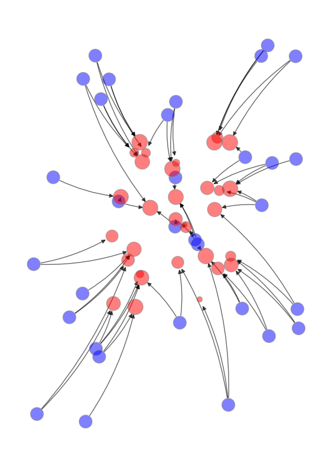

36. 最优传输#
36.1. 概述#
运输或最优传输问题之所以有趣，不仅是因为它有许多应用，还因为它在经济理论历史中扮演着重要角色。
在本讲座中，我们将描述这个问题，说明线性规划是解决它的关键工具，然后提供一些示例。
我们将在后续讲座中提供其他应用。
最优传输问题在早期关于线性规划的研究中就被研究过，例如在[Dorfman et al., 1958]中有总结。关于经济学应用的现代参考文献是[Galichon, 2016]。
下面，我们将展示如何使用几种线性规划的实现方法来解决最优传输问题，包括：
来自SciPy的求解器linprog，
来自QuantEcon的求解器linprog_simplex，以及
Python Optimal Transport 包中的基于单纯形法的求解器。
!pip install --upgrade quantecon
!pip install --upgrade POT
让我们从一些导入语句开始。
import numpy as np
import matplotlib.pyplot as plt
import matplotlib as mpl
FONTPATH = "fonts/SourceHanSerifSC-SemiBold.otf"
mpl.font_manager.fontManager.addfont(FONTPATH)
plt.rcParams['font.family'] = ['Source Han Serif SC']
from scipy.optimize import linprog
from quantecon.optimize.linprog_simplex import linprog_simplex
import ot
from scipy.stats import betabinom
import networkx as nx
36.2. 最优运输问题#
假设有 \(m\) 个工厂生产的商品必须运送到\(n\)个地点。
令
\(x_{ij}\) 表示从工厂 \(i\) 运往地点 \(j\) 的数量
\(c_{ij}\) 表示从工厂 \(i\) 运往地点 \(j\) 每单位的运输成本
\(p_i\) 表示工厂 \(i\)的产能，\(q_j\) 表示地点 \(j\) 所需的数量
\(i = 1, 2, \dots, m\) 且 \(j = 1, 2, \dots, n\)
规划者希望在以下约束条件下最小化总运输成本：
从每个工厂运出的数量必须等于其产能
运往每个地点的数量必须等于该地点所需的数量
下图展示了当工厂和目标地点分布在平面上时的一种可视化表示。

图中顶点的大小与以下内容成正比：
对于工厂来说，是产能，以及
目标地点的需求量。
箭头显示了一个可能的运输方案，该方案遵守上述约束条件。
规划者的问题可以表示为以下约束最小化问题：
这是一个最优运输问题，包含：
\(mn\) 个决策变量，即元素 \(x_{ij}\)，以及
\(m+n\) 个约束条件。
将所有 \(j\) 的 \(q_j\) 相加和所有 \(i\) 的 \(p_i\) 相加表明，所有工厂的总产能等于所有地点的总需求：
(36.2) 中这些约束的存在，将导致我们在下文要描述的完整约束集合中出现一个冗余。
稍后会详细讨论这一点。
36.3. 线性规划方法#
在本节中，我们讨论使用标准线性规划求解器来求解最优传输问题。
36.3.1. 决策变量矩阵的向量化#
在问题 (36.1) 中出现了决策变量 \(x_{ij}\) 的矩阵。
SciPy 函数 linprog 需要接收决策变量的向量。
这种情况促使我们需要用决策变量的向量来重写我们的问题。
令：
\(X, C\) 是具有元素 \(x_{ij}, c_{ij}\) 的 \(m \times n\) 矩阵，
\(p\) 是具有元素 \(p_i\) 的 \(m\) 维向量，
\(q\) 是具有元素 \(q_j\) 的 \(n\) 维向量。
用 \(\mathbf{1}_n\) 表示 \(n\) 维列向量 \((1, 1, \dots, 1)'\)，我们的问题现在可以简洁地表示为：
我们可以通过将矩阵 \(X\) 的所有列堆叠成一个列向量来将其转换为向量。
这种操作称为向量化，我们用\(\operatorname{vec}(X)\)表示。
同样，我们将矩阵 \(C\) 转换为 \(mn\) 维向量 \(\operatorname{vec}(C)\)。
目标函数可以表示为 \(\operatorname{vec}(C)\) 和 \(\operatorname{vec}(X)\) 的内积：
为了用 \(\operatorname{vec}(X)\) 表示约束条件，我们使用克罗内克积，用 \(\otimes\) 表示，定义如下。
假设\(A\)是一个 \(m \times s\) 矩阵，其元素为 \((a_{ij})\)，而 \(B\) 是一个 \(n \times t\) 矩阵。
以分块矩阵形式表示的克罗内克积是：
\(A \otimes B\) 是一个 \(mn \times st\) 矩阵。
它具有这样的性质：对于任意 \(m \times n\) 矩阵 \(X\)
现在我们可以用 \(\operatorname{vec}(X)\) 来表示我们的约束条件。
令 \(A = \mathbf{I}_m', B = \mathbf{1}_n\)。
根据等式 (36.3)
其中 \(\mathbf{I}_m\) 表示 \(m \times m\) 单位矩阵。
约束条件 \(X \ \mathbf{1}_n = p\) 现在可以写成：
类似地，约束条件 \(X' \ \mathbf{1}_m = q\) 可以重写为：
令 \(z := \operatorname{vec}(X)\)，我们的问题现在可以用一个 \(mn\) 维的决策变量向量来表示：
其中
36.3.2. 应用实例#
我们现在提供一个采用 (36.4) 形式的例子，我们将使用 linprog 函数来求解。
下表提供了需求向量 \(q\)、产能向量 \(p\) 以及运输成本矩阵 \(C\) 中各项 \(c_{ij}\) 的数值。
| 需求量 | ||||
|---|---|---|---|---|
| 地点 | 1 | 2 | 3 | |
| 1 | 10 | 20 | 30 | 25 |
| 2 | 15 | 40 | 35 | 115 |
| 3 | 20 | 15 | 40 | 60 |
| 4 | 20 | 30 | 55 | 30 |
| 5 | 40 | 30 | 25 | 70 |
| 产能 | 50 | 100 | 150 | 300 |
上表中的数字告诉我们设定 \(m = 3\)，\(n = 5\)，并构造以下对象：
让我们编写Python代码来设置问题并求解。
# 定义参数
m = 3
n = 5
p = np.array([50.0, 100.0, 150.0])
q = np.array([25.0, 115.0, 60.0, 30.0, 70.0])
C = np.array([[10.0, 15.0, 20.0, 20.0, 40.0],
[20.0, 40.0, 15.0, 30.0, 30.0],
[30.0, 35.0, 40.0, 55.0, 25.0]])
# 将矩阵C向量化
C_vec = C.reshape((m*n, 1), order='F')
# 通过克罗内克积构造矩阵A
A1 = np.kron(np.ones((1, n)), np.identity(m))
A2 = np.kron(np.identity(n), np.ones((1, m)))
A = np.vstack([A1, A2])
# 构造向量b
b = np.hstack([p, q])
# 求解原问题
res = linprog(C_vec, A_eq=A, b_eq=b)
# 打印结果
print("消息:", res.message)
print("迭代次数:", res.nit)
print("目标函数值:", res.fun)
print("z:", res.x)
print("X:", res.x.reshape((m,n), order='F'))
消息: Optimization terminated successfully. (HiGHS Status 7: Optimal)
迭代次数: 8
目标函数值: 7225.0
z: [ 0. 10. 15. 50. 0. 65. 0. 60. 0. 0. 30. 0. 0. 0. 70.]
X: [[ 0. 50. 0. 0. 0.]
[10. 0. 60. 30. 0.]
[15. 65. 0. 0. 70.]]
注意，在 C_vec = C.reshape((m*n, 1), order='F') 这一行中，我们谨慎地使用了选项 order='F' 来进行向量化。
这与将矩阵 \(C\) 转换为向量的方式一致，即将其所有列堆叠成一个列向量。
这里的 'F' 代表”Fortran”，我们使用的是Fortran风格的列优先顺序。
（关于使用Python默认的行优先顺序的另一种方法，请参见Alfred Galichon的这个讲座。）
解释求解器的行为：
观察矩阵 \(A\)，我们可以看出它是不满秩的。
np.linalg.matrix_rank(A) < min(A.shape)
np.True_
这表明该线性规划的设定中包含了一个或多个冗余约束。
这里，冗余的来源是限制条件 (36.2) 的结构。
让我们通过打印出 \(A\) 并仔细观察来进一步探讨这个问题。
A
array([[1., 0., 0., 1., 0., 0., 1., 0., 0., 1., 0., 0., 1., 0., 0.],
[0., 1., 0., 0., 1., 0., 0., 1., 0., 0., 1., 0., 0., 1., 0.],
[0., 0., 1., 0., 0., 1., 0., 0., 1., 0., 0., 1., 0., 0., 1.],
[1., 1., 1., 0., 0., 0., 0., 0., 0., 0., 0., 0., 0., 0., 0.],
[0., 0., 0., 1., 1., 1., 0., 0., 0., 0., 0., 0., 0., 0., 0.],
[0., 0., 0., 0., 0., 0., 1., 1., 1., 0., 0., 0., 0., 0., 0.],
[0., 0., 0., 0., 0., 0., 0., 0., 0., 1., 1., 1., 0., 0., 0.],
[0., 0., 0., 0., 0., 0., 0., 0., 0., 0., 0., 0., 1., 1., 1.]])
\(A\) 的奇异性反映了前三个约束和后五个约束都要求(36.2)中表达的”总需求等于总容量”。
这里有一个冗余的等式约束。
幸运的是，SciPy的linprog函数会自动处理冗余约束，而不会明确警告存在秩亏问题。
不过我们可以去掉一个等式约束，只使用其中的7个。
这样做之后，我们得到了相同的最小成本。
然而，我们找到了一个不同的运输方案。
虽然这是一个不同的方案，但它达到了相同的成本！
linprog(C_vec, A_eq=A[:-1], b_eq=b[:-1])
message: Optimization terminated successfully. (HiGHS Status 7: Optimal)
success: True
status: 0
fun: 7225.0
x: [ 0.000e+00 1.000e+01 ... 0.000e+00 7.000e+01]
nit: 8
lower: residual: [ 0.000e+00 1.000e+01 ... 0.000e+00
7.000e+01]
marginals: [ 0.000e+00 0.000e+00 ... 1.500e+01
0.000e+00]
upper: residual: [ inf inf ... inf
inf]
marginals: [ 0.000e+00 0.000e+00 ... 0.000e+00
0.000e+00]
eqlin: residual: [ 0.000e+00 0.000e+00 0.000e+00 0.000e+00
0.000e+00 0.000e+00 0.000e+00]
marginals: [ 5.000e+00 1.500e+01 2.500e+01 5.000e+00
1.000e+01 -0.000e+00 1.500e+01]
ineqlin: residual: []
marginals: []
mip_node_count: 0
mip_dual_bound: 0.0
mip_gap: 0.0
%time linprog(C_vec, A_eq=A[:-1], b_eq=b[:-1])
CPU times: user 1.98 ms, sys: 11 μs, total: 1.99 ms
Wall time: 1.76 ms
message: Optimization terminated successfully. (HiGHS Status 7: Optimal)
success: True
status: 0
fun: 7225.0
x: [ 0.000e+00 1.000e+01 ... 0.000e+00 7.000e+01]
nit: 8
lower: residual: [ 0.000e+00 1.000e+01 ... 0.000e+00
7.000e+01]
marginals: [ 0.000e+00 0.000e+00 ... 1.500e+01
0.000e+00]
upper: residual: [ inf inf ... inf
inf]
marginals: [ 0.000e+00 0.000e+00 ... 0.000e+00
0.000e+00]
eqlin: residual: [ 0.000e+00 0.000e+00 0.000e+00 0.000e+00
0.000e+00 0.000e+00 0.000e+00]
marginals: [ 5.000e+00 1.500e+01 2.500e+01 5.000e+00
1.000e+01 -0.000e+00 1.500e+01]
ineqlin: residual: []
marginals: []
mip_node_count: 0
mip_dual_bound: 0.0
mip_gap: 0.0
%time linprog(C_vec, A_eq=A, b_eq=b)
CPU times: user 2.05 ms, sys: 3 μs, total: 2.05 ms
Wall time: 1.74 ms
message: Optimization terminated successfully. (HiGHS Status 7: Optimal)
success: True
status: 0
fun: 7225.0
x: [ 0.000e+00 1.000e+01 ... 0.000e+00 7.000e+01]
nit: 8
lower: residual: [ 0.000e+00 1.000e+01 ... 0.000e+00
7.000e+01]
marginals: [ 0.000e+00 0.000e+00 ... 1.500e+01
0.000e+00]
upper: residual: [ inf inf ... inf
inf]
marginals: [ 0.000e+00 0.000e+00 ... 0.000e+00
0.000e+00]
eqlin: residual: [ 0.000e+00 0.000e+00 0.000e+00 0.000e+00
0.000e+00 0.000e+00 0.000e+00 0.000e+00]
marginals: [ 1.000e+01 2.000e+01 3.000e+01 -0.000e+00
5.000e+00 -5.000e+00 1.000e+01 -5.000e+00]
ineqlin: residual: []
marginals: []
mip_node_count: 0
mip_dual_bound: 0.0
mip_gap: 0.0
显然，处理去掉冗余约束的系统会稍微快一些。
让我们再深入做些计算，以判断：我们出现两个不同的最优传输方案，是否是因为删去了一条冗余的等式约束所致。
提示
事实将证明，删除冗余等式约束并不是真正重要的。
为了验证我们的提示，我们将简单地使用所有原始的等式约束（包括一个冗余约束），只是重新排列这些约束的顺序。
arr = np.arange(m+n)
sol_found = []
cost = []
rng = np.random.default_rng()
# 模拟1000次
for i in range(1000):
rng.shuffle(arr)
res_shuffle = linprog(C_vec, A_eq=A[arr], b_eq=b[arr])
# 如果找到新解
sol = tuple(res_shuffle.x)
if sol not in sol_found:
sol_found.append(sol)
cost.append(res_shuffle.fun)
for i in range(len(sol_found)):
print(f"运输方案 {i}: ", sol_found[i])
print(f"最小成本 {i}: ", cost[i])
运输方案 0: (np.float64(0.0), np.float64(10.0), np.float64(15.0), np.float64(50.0), np.float64(0.0), np.float64(65.0), np.float64(0.0), np.float64(60.0), np.float64(0.0), np.float64(0.0), np.float64(30.0), np.float64(0.0), np.float64(0.0), np.float64(0.0), np.float64(70.0))
最小成本 0: 7225.0
啊哈！ 如你所见，在这种情况下，仅仅改变约束的顺序，就会显现出两个实现相同最小成本的最优传输方案。
这就是我们之前计算出的两个方案。
接下来，我们展示”意外地”省略第一个约束条件会得到我们最初计算的方案。
linprog(C_vec, A_eq=A[1:], b_eq=b[1:])
message: Optimization terminated successfully. (HiGHS Status 7: Optimal)
success: True
status: 0
fun: 7225.0
x: [ 0.000e+00 1.000e+01 ... 0.000e+00 7.000e+01]
nit: 8
lower: residual: [ 0.000e+00 1.000e+01 ... 0.000e+00
7.000e+01]
marginals: [ 0.000e+00 0.000e+00 ... 1.500e+01
0.000e+00]
upper: residual: [ inf inf ... inf
inf]
marginals: [ 0.000e+00 0.000e+00 ... 0.000e+00
0.000e+00]
eqlin: residual: [ 0.000e+00 0.000e+00 0.000e+00 0.000e+00
0.000e+00 0.000e+00 0.000e+00]
marginals: [ 1.000e+01 2.000e+01 1.000e+01 1.500e+01
5.000e+00 2.000e+01 5.000e+00]
ineqlin: residual: []
marginals: []
mip_node_count: 0
mip_dual_bound: 0.0
mip_gap: 0.0
把这个运输方案与下列结果对比：
res.x
array([ 0., 10., 15., 50., 0., 65., 0., 60., 0., 0., 30., 0., 0.,
0., 70.])
这里，矩阵 \(X\) 中的各元素 \(x_{ij}\) 表示从工厂 \(i = 1, 2, 3\) 运往地点 \(j=1,2, \ldots, 5\) 的运输量。
向量 \(z\) 显然等于 \(\operatorname{vec}(X)\)。
最优运输方案的最小成本由变量 \(fun\) 给出。
36.3.3. 使用即时编译器#
我们也可以使用 QuantEcon 中的一个强大工具来求解最优运输问题，即 quantecon.optimize.linprog_simplex。
虽然 scipy.optimize.linprog 默认使用 HiGHS 求解器，但 quantecon.optimize.linprog_simplex 实现的是单纯形算法，并通过使用 numba 库中的即时编译器进行了加速。
如你很快就会看到，使用 quantecon.optimize.linprog_simplex 可以显著减少求解最优运输问题所需的时间。
# 为 linprog_simplex 构造矩阵/向量
c = C.flatten()
# 等式约束
A_eq = np.zeros((m+n, m*n))
for i in range(m):
for j in range(n):
A_eq[i, i*n+j] = 1
A_eq[m+j, i*n+j] = 1
b_eq = np.hstack([p, q])
由于 quantecon.optimize.linprog_simplex 执行的是最大化而不是最小化运算，我们需要在向量 c 前加上负号。
res_qe = linprog_simplex(-c, A_eq=A_eq, b_eq=b_eq)
尽管这两个线性规划（LP）求解器采用的算法不同（HiGHS 与单纯形法），它们都应当能找到最优解。
两个求得的解之所以不同，是因为最优解不唯一，但目标函数值相同。
np.allclose(-res_qe.fun, res.fun)
True
res_qe.x.reshape((m, n), order='C')
array([[15., 35., 0., 0., 0.],
[10., 0., 60., 30., 0.],
[ 0., 80., 0., 0., 70.]])
res.x.reshape((m, n), order='F')
array([[ 0., 50., 0., 0., 0.],
[10., 0., 60., 30., 0.],
[15., 65., 0., 0., 70.]])
让我们比较一下 scipy.optimize.linprog 和 quantecon.optimize.linprog_simplex 的运行速度。
# scipy.optimize.linprog
%time res = linprog(C_vec, A_eq=A[:-1, :], b_eq=b[:-1])
CPU times: user 2.21 ms, sys: 12 μs, total: 2.23 ms
Wall time: 1.91 ms
# quantecon.optimize.linprog_simplex
%time out = linprog_simplex(-c, A_eq=A_eq, b_eq=b_eq)
CPU times: user 40 μs, sys: 2 μs, total: 42 μs
Wall time: 44.3 μs
如您所见，quantecon.optimize.linprog_simplex 的速度要快得多。
(但请注意，SciPy 版本可能比 QuantEcon 版本更稳定，因为它经过了更长时间的广泛测试。)
36.4. 对偶问题#
设 \(u, v\) 表示对偶决策变量的向量，其分量为 \((u_i), (v_j)\)。
最小化问题(36.1)的对偶是以下最大化问题：
对偶问题也是一个线性规划问题。
它有 \(m+n\) 个对偶变量和 \(mn\) 个约束。
值向量 \(u\) 和 \(v\) 分别附加到原问题的第一组和第二组约束上。
因此，\(u\) 附加到以下约束上：
\((\mathbf{1}_n' \otimes \mathbf{I}_m) \operatorname{vec}(X) = p\)
且 \(v\) 与以下约束相关
\((\mathbf{I}_n \otimes \mathbf{1}_m') \operatorname{vec}(X) = q.\)
向量 \(u\) 和 \(v\) 的各个分量（每单位价值）即为这些约束右侧所出现数量的影子价格。
我们可以将对偶问题写作
针对上面描述的同一个数值例子，我们来解它的对偶问题
# 求解对偶问题
res_dual = linprog(-b, A_ub=A.T, b_ub=C_vec,
bounds=[(None, None)]*(m+n))
# 输出结果
print("消息：", res_dual.message)
print("迭代次数：", res_dual.nit)
print("目标函数值", res_dual.fun)
print("u:", res_dual.x[:m])
print("v:", res_dual.x[-n:])
消息： Optimization terminated successfully. (HiGHS Status 7: Optimal)
迭代次数： 9
目标函数值 -7225.0
u: [-20. -10. 0.]
v: [30. 35. 25. 40. 25.]
quantecon.optimize.linprog_simplex会在给出原问题解的同时计算并返回对偶变量。
这些对偶变量（影子价格）可以直接从原问题的解中提取：
# linprog_simplex 会返回对偶变量
print("来自linprog_simplex的对偶变量:")
print("u:", -res_qe.lambd[:m])
print("v:", -res_qe.lambd[m:])
来自linprog_simplex的对偶变量:
u: [-20. -10. -0.]
v: [30. 35. 25. 40. 25.]
我们可以核对它们与SciPy得到的对偶解一致：
print("来自SciPy linprog的对偶变量:")
print("u:", res_dual.x[:m])
print("v:", res_dual.x[-n:])
来自SciPy linprog的对偶变量:
u: [-20. -10. 0.]
v: [30. 35. 25. 40. 25.]
36.4.1. 对偶问题的解释#
根据强对偶性（请参见此讲座 线性规划），我们知道：
工厂 \(i\) 增加一个单位的产能，即 \(p_i\)，将导致运输成本增加 \(u_i\)。
因此，\(u_i\) 描述了从工厂 \(i\) 运出一个单位的成本。
我们称之为从工厂 \(i\) 运出一个单位的出货成本。
类似地，\(v_j\) 是运送一个单位到地点 \(j\) 的成本。
我们称之为运送一个单位到地点 \(j\) 的进货成本。
强对偶性表明总运输成本等于总出货成本加上总进货成本。
对于一个单位的产品，出货成本 \(u_i\) 加上进货成本 \(v_j\) 应该等于运输成本\(c_{ij}\)，这是合理的。
这种相等性由互补松弛条件保证，该条件规定当 \(x_{ij} > 0\) 时，即当从工厂 \(i\) 到地点 \(j\) 有正向运输量时，必须满足 \(u_i + v_j = c_{ij}\)。
36.5. Python最优传输包#
有一个优秀的Python包专门用于最优传输，它简化了我们上面采取的一些步骤。
特别是，这个包会在把数据交给线性规划求解器之前，先处理好向量化步骤。
（话虽如此，上面关于向量化的讨论仍然很重要，因为我们想要了解其内部运作原理。）
36.5.1. 复现之前的结果#
下面这行代码使用线性规划解决了上面讨论的示例应用。
X = ot.emd(p, q, C)
X
array([[15., 35., 0., 0., 0.],
[10., 0., 60., 30., 0.],
[ 0., 80., 0., 0., 70.]])
果然，我们得到了相同的解决方案和相同的成本
total_cost = np.vdot(X, C)
total_cost
np.float64(7225.0)
这里我们使用 np.vdot 来计算 X 和 C 的迹内积
36.5.2. 更大的应用#
现在让我们尝试在一个稍大一点的应用上使用相同的包。
该应用与上面的解读相同，但我们还会为每个结点（即顶点）指定一个平面中的位置。
这样就可以把得到的运输方案作为图中的边来绘制。
下面这个类用以下信息来定义一个结点：
它的位置 \((x, y) \in \mathbb R^2\)，
它的组别（工厂或地点，用
p或q表示）以及它的质量（例如，\(p_i\)或\(q_j\)）。
class Node:
def __init__(self, x, y, mass, group, name):
self.x, self.y = x, y
self.mass, self.group = mass, group
self.name = name
接下来我们编写一个函数，重复调用上面的类来构建实例。
它为创建的节点分配位置、质量和组别。
位置是随机分配的。
def build_nodes_of_one_type(group='p', n=100, seed=123):
nodes = []
rng = np.random.default_rng(seed)
for i in range(n):
if group == 'p':
m = 1/n
x = rng.uniform(-2, 2)
y = rng.uniform(-2, 2)
else:
m = betabinom.pmf(i, n-1, 2, 2)
x = 0.6 * rng.uniform(-1.5, 1.5)
y = 0.6 * rng.uniform(-1.5, 1.5)
name = group + str(i)
nodes.append(Node(x, y, m, group, name))
return nodes
现在我们构建两个节点列表，每个列表包含一种类型（工厂或地点）
n_p = 32
n_q = 32
p_list = build_nodes_of_one_type(group='p', n=n_p)
q_list = build_nodes_of_one_type(group='q', n=n_q)
p_probs = [p.mass for p in p_list]
q_probs = [q.mass for q in q_list]
对于成本矩阵 \(C\)，我们使用每个工厂和地点之间的欧几里得距离。
c = np.empty((n_p, n_q))
for i in range(n_p):
for j in range(n_q):
x0, y0 = p_list[i].x, p_list[i].y
x1, y1 = q_list[j].x, q_list[j].y
c[i, j] = np.sqrt((x0-x1)**2 + (y0-y1)**2)
现在我们准备应用求解器
%time pi = ot.emd(p_probs, q_probs, c)
CPU times: user 540 μs, sys: 31 μs, total: 571 μs
Wall time: 406 μs
最后，让我们使用networkx来绘制结果。
在下面的图中，
节点大小与质量成正比
当在最优运输方案下从 \(i\) 到 \(j\) 有正向转移时，会画出一个从 \(i\) 到 \(j\) 的边（箭头）。
g = nx.DiGraph()
g.add_nodes_from([p.name for p in p_list])
g.add_nodes_from([q.name for q in q_list])
for i in range(n_p):
for j in range(n_q):
if pi[i, j] > 0:
g.add_edge(p_list[i].name, q_list[j].name, weight=pi[i, j])
node_pos_dict={}
for p in p_list:
node_pos_dict[p.name] = (p.x, p.y)
for q in q_list:
node_pos_dict[q.name] = (q.x, q.y)
node_color_list = []
node_size_list = []
scale = 8_000
for p in p_list:
node_color_list.append('blue')
node_size_list.append(p.mass * scale)
for q in q_list:
node_color_list.append('red')
node_size_list.append(q.mass * scale)
fig, ax = plt.subplots(figsize=(7, 10))
plt.axis('off')
nx.draw_networkx_nodes(g,
node_pos_dict,
node_color=node_color_list,
node_size=node_size_list,
edgecolors='grey',
linewidths=1,
alpha=0.5,
ax=ax)
nx.draw_networkx_edges(g,
node_pos_dict,
arrows=True,
connectionstyle='arc3,rad=0.1',
alpha=0.6)
plt.show()
findfont: Failed to find font weight normal, now using 600.
